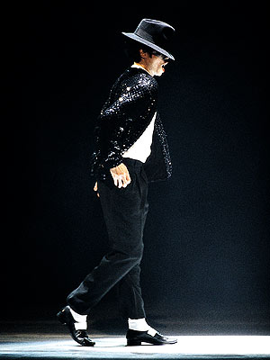
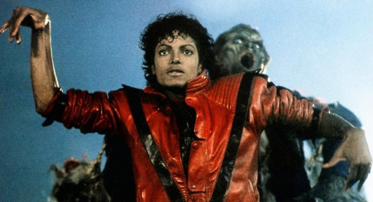
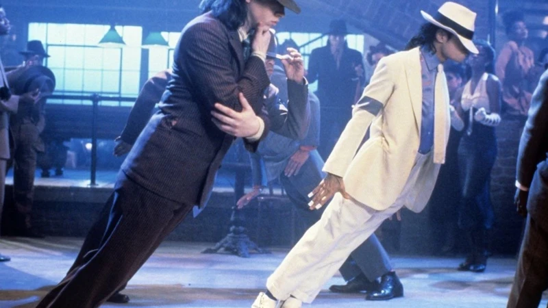
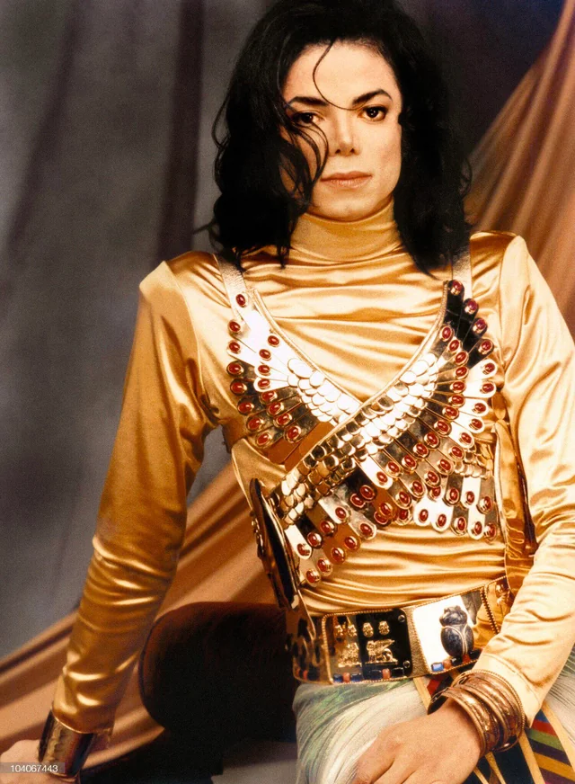

O Moonwalk é o passo mais famoso de Michael Jackson e se tornou um símbolo da cultura pop. O movimento cria a ilusão de que o dançarino está deslizando para trás enquanto caminha para frente. A performance ganhou destaque mundial durante “Billie Jean” em 1983.

A coreografia de Thriller revolucionou os videoclipes musicais ao unir dança e elementos cinematográficos. Os movimentos sincronizados com os dançarinos vestidos de zumbis se tornaram uma das apresentações mais reconhecidas da história da música.

Smooth Criminal apresentou movimentos rápidos, precisos e a famosa inclinação corporal que impressiona fãs até hoje. A coreografia mistura estilo teatral, dança moderna e efeitos visuais marcantes.

A dança de Beat It trouxe uma forte influência das danças urbanas e ajudou a construir a imagem rebelde e energética de Michael Jackson. O clipe ficou conhecido pelas coreografias sincronizadas e cheias de atitude.

Inspirada na cultura egípcia, a coreografia de Remember The Time mistura movimentos elegantes, efeitos visuais e muita expressão corporal. O videoclipe é considerado um dos mais criativos da carreira de Michael.